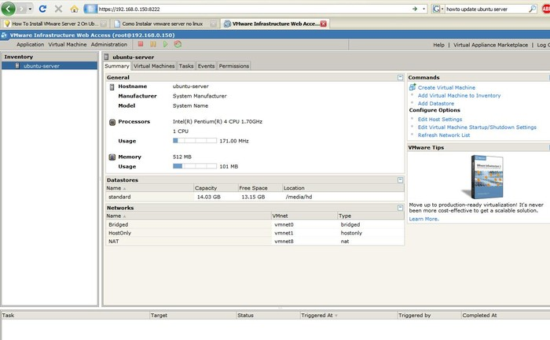
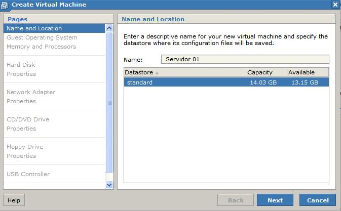
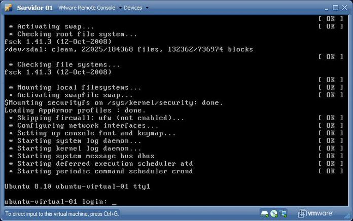

Installing VMWare Server 2 on Ubuntu Server 8.10 (Intrepid Ibex)
1. Introduction
Finding reliable information about turning an Ubuntu Server installation into a Virtualization Server is not an easy task, and if you - like me - are going for a command-line only server, you will find this guide extremely useful.
VMWare Server 2 is a very good, free alternative to virtualization from VMWare - a company that has always been a leading provider in the virtualization arena. VMWare Server 2 requires a license number for installation, but this license can be freely obtained after registering at the VMWare page.
This product offers a solution that allows, among other things, the creation of headless servers. These are completely administrable via a browser, including creating virtual machines, powering up or down, and even command-line access.
Please note that while this article is aimed at a clean Ubuntu Server installation, most of the information contained within can be used on any modern distribution, whether command-line only or GUI.
2. Obtaining VMWare Server 2
To obtain the VMWare Server 2, you need to register at the VMWare Web page, http://www.vmware.com/products/server/, by clicking on the "Download" link.
After you submit your data, you will receive an e-mail with the serial numbers needed to activate your account - both on Windows and on a Linux host - and the download links. In this article, we will install using the VMWare Server 2 tar package, so go ahead and download it - get the one that fits your computer architecture (32 or 64 bit) - and save it on the computer where you want to install it. I will use "/home/deivid/" as the file location in the next few steps - change it to reflect the actual location where you saved the file.
3. Installing VMWare Server 2
First things first. To install VMWare Server 2, you need to install three packages: build-essential, linux-headers-server, and xinetd. If linux-headers-server does not point to the headers of the kernel you are using, install the correct ones. I had to install "linux-headers-2.6.27-7-server". You can check what kernel version you are currently running with "uname -r".
You can install these packages by using:
sudo apt-get install build-essential xinetd linux-headers-$(uname -r)
After you install the required packages, go to the folder where VMWare Server's tar package was saved, unpack it, and execute the install script as follows:
tar xvzf VMware-server-*.tar.gz cd vmware-server-distrib sudo ./vmware-install.pl
The install script will ask you some questions - where to install the files and docs, the current location of some files on your system, etc. On all of those questions, you can accept the default option by pressing "Enter". On the EULA screen, you can quit reading it by pressing "q", but you'll need to type "yes" then press "Enter" to accept it.
The next questions will be about the location of the current kernel header include files, so the installer can use them to compile some modules for you. The usual location is "/usr/src/linux-headers-<kernel version>/include" - for example, "/usr/src/linux-headers-2.6.27-7-server/include". After that, some files will be compiled, and the installer will ask several more questions - but again, the defaults all work fine.
After that, the service will be installed and running and you can access the control interface via any Web browser, accessing <server ip>:8222 - for example, 192.168.0.150:8222. Please note that on Firefox, there will be a warning about this site's certificate, but it's safe to add an exception to it for this particular use.
To log in, by default you use the "root" account and password of the machine it's running on. With Ubuntu, you need to set a root password first - easily be done via the command "sudo passwd root". You can give permissions to other users in the "Permissions" link of the Web interface.
All the virtual machine administration can be done via this Web interface, including virtual machine creation, boot-up, access, and shut-down.
4. Creating a Virtual Machine
The process to create a virtual machine is pretty simple. Just click the "Create Virtual Machine" link in the web interface, and follow the on-screen instructions.
Here's a description of some of the data the system asks for during the installation:
- Name
- Virtual machine name
- Datastore
- Location where the virtual machine data will be stored inside the computer (configured during the VMWare Server 2 installation)
- Guest Operating System
- the OS that will run inside the virtual machine
In the next few steps, you configure the specifications of the virtual machine, including the amount of RAM and number of processors, capacity of the HD and the location where the data will be stored, details about the Network adapter, CD-ROM, floppy drives, USB controllers, etc. Configure accordingly with what you will need in the virtual machine.
In the Networking configuration dialog, you have three options for a network connection:
- Host Only
- Direct connection to the host machine (host X VM only)
- Bridged
- Gives the virtual machine a real IP in the external network via Bridging
- NAT
- The virtual machine can access the external network via a NAT table without having its own external IP
After you've completed all of the above configuration, the Virtual Machine will be created.
5. Accessing a Virtual Machine
All the access to the virtual machine, as previously mentioned, is done via the Web interface. To power up the machine, you select it in the menu and press the "Play" button at the top of the window - other buttons are used to power-down and reboot it.
To gain access to the virtual machine console (e.g., to install an Operational System), after the machine is powered on, click on the "Console" link. Note that you will have to install a browser plug-in the first time you do so, but the installation is pretty straight-forward (click "Install Plug-in" and follow your browser's instructions - it's also needed to reboot the browser after the plug-in installation).
After that you can use that "Console" link to have access to the computer. Operating System installation on a virtual machine goes as if you were using a normal computer, so if needed, you can use any article about installing the operating system of your choice.
6. Summary
Virtualization is an important topic in computing, and is getting more and more popular lately. However, finding specific information - like how to make use of virtualization on a command-line only server, is a bit tricky. That is the gap this article has tried to fill - and I hope you (readers) can make a good use of it.
Here are links for some pages that might be useful:
Ubuntu Server Installation Guide: https://help.ubuntu.com/8.10/serverguide/C/installing-from-cd.html
VMWare Server 2: http://www.vmware.com/products/server/
"Any intelligent fool can make things bigger, more complex, and more violent. It takes a touch of genius - and a lot of courage - to move in the opposite direction."
-- Albert Einstein
Talkback: Discuss this article with The Answer Gang
![[BIO]](../gx/authors/dokopnik.jpg)
Deividson was born in União da Vitória, PR, Brazil, on 14/04/1984. He became interested in computing when he was still a kid, and started to code when he was 12 years old. He is a graduate in Information Systems and is finishing his specialization in Networks and Web Development. He codes in several languages, including C/C++/C#, PHP, Visual Basic, Object Pascal and others.
Deividson works in Porto União's Town Hall as a Computer Technician, and specializes in Web and Desktop system development, and Database/Network Maintenance.